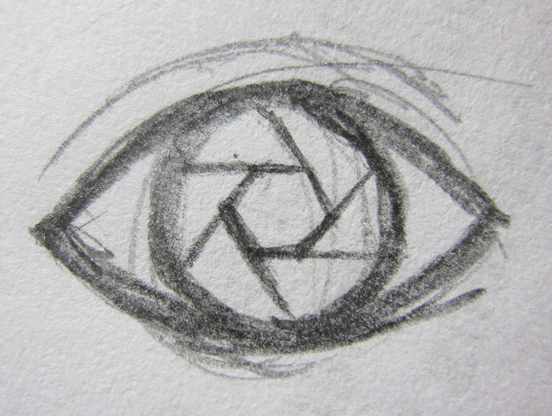
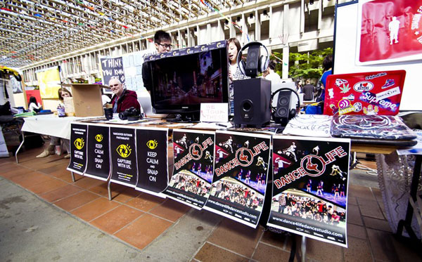

VOP Branding Design
Branding / Graphic Design
Volunteered branding design through graphics for my own photography club, done individually.
The objective was to create remarkable branding designs that can represent club culture, as well as being recognizable for notability and attracting membership.
My Role: Graphic Design, Branding
Software used: Adobe Illustrator
Designed in September 2012

Story Behind Project
VOP (Vancouver Outdoor Photography) is a photography club focusing on outdoor photography. Since it is a newly established club by 3 SFU IAT students (including me), I volunteered to design a recognizable logo to represent our club and posters to advertise our events such as photo contest, photo tour, or vophops.
As the manager, graphic designer and one of the establisher of VOP, my responsibility was to design the logo, posters and business cards for VOP. It is the first time I do a series of graphic design and apply them to the real life. The logo is highly acclaimed among VOP members; our posters are very recognizable and remarkable from many other posters on school wall, which bring us notability and membership as well.
Design Process
- 

I started designing the logo with an eye with aperture blades as its eyeball and aperture as pupil. This is because what eyes see through the camera is exactly what the lens sees. Then I added 3 short lines on top right of the eye, which can be seen as both eyelash or the sound of snapping. Since members in our club are mostly young people, adding these lines also makes the logo not rigid.
I chose yellow, black and white as color palette because they are the main colors of National Geography, which is a professional photography magazine and website.
Final Deliveries

- 
These are how the printed flyers and posters look. Photos are taken in club fair on SFU Burnaby Campus by Yan Hong.